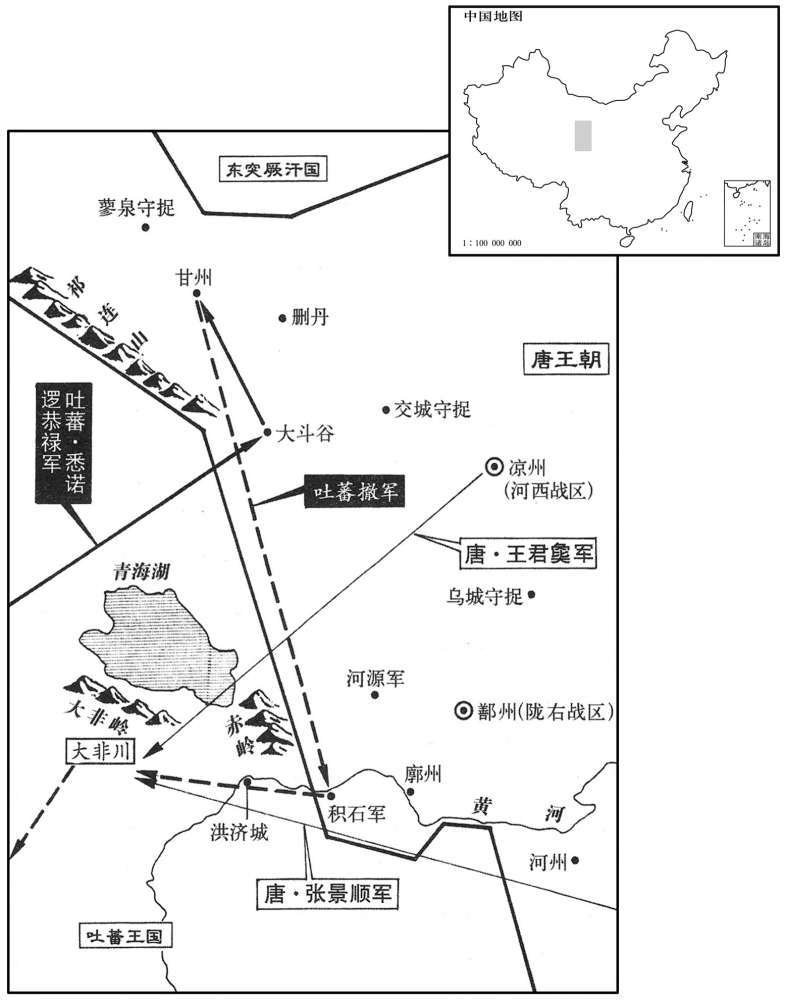
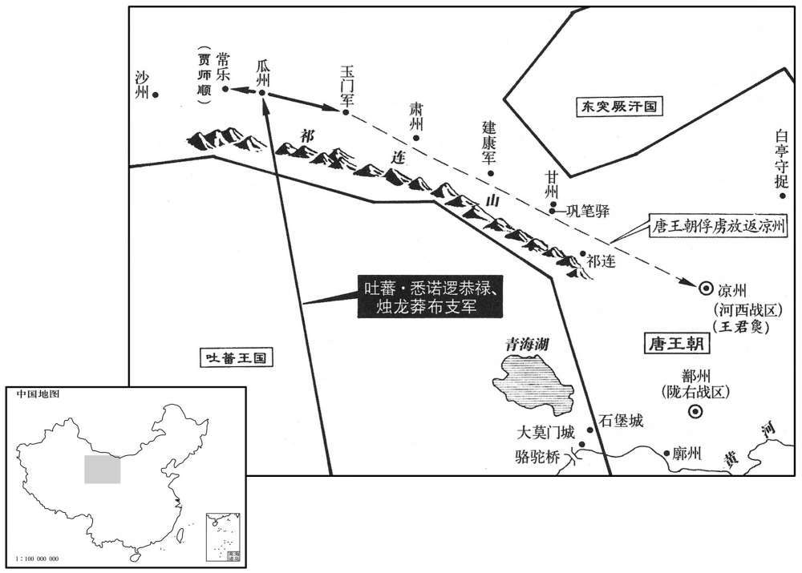

公元727年资治通鉴：本年记事、原文与白话对照
按原书编年位置阅读；追叙和史论不等于本年发生的事件。白话采用所据译本，缺译不以生成译文补齐。
卷213 · 本年记事
公元727年 · 唐玄宗至道大圣大明孝皇帝开十五年
十五年〔（丁卯、七二七）〕
上传原文的注释括号有异常，字符原样保留；无法可靠划分的段落默认全文显示。
本年事件索引（现代整理）
- 王君㚟在青海以西大破吐蕃
- 张说劝玄宗接受吐蕃求和以减轻边民负担
- 王君㚟追击吐蕃获胜，玄宗更加重视边功
- 刘宗器所开新汴渠淤塞，被贬后旧渠疏通
- 张说被迫致仕，崔隐甫免官，宇文融外任
- 玄宗下令逃户逾期归籍者按白丁纳租服役
- 诸皇子遥领州牧、节度使及大都护等职
- 玄宗将皇子安置于十王宅，严控出入
- 玄宗命宫中妃嫔养蚕，贵近获赐丝
- 冀州黄河泛滥
- 苏颋去世
- 吐蕃攻陷瓜州，王君㚟不敢出战
- 贾师顺坚守常乐县，迫使吐蕃撤退
- 王君㚟构陷河曲四部，致多位首领被流放
- 毗伽可汗献上吐蕃联合入寇书，获准互市
- 吐蕃与突骑施围攻安西，被赵颐贞击退
- 回纥护输伏击杀害王君㚟并投奔吐蕃
- 唐玄宗自东都返回长安
- 李祎任朔方节度副大使
- 张守珪设宴退吐蕃并修复瓜州
- 萧嵩离间吐蕃
- 唐廷部署诸道兵防秋击吐蕃
- 唐玄宗幸骊山温泉
本年形势与背景参考图

本年形势与背景参考图
春，正月，辛丑，凉州都督王君勠破吐蕃于青海之西。〔勠，丑略翻。吐，从暾入声。〕
春季，正月，辛丑，（二十八日），凉州都督王君在青海西边打败了吐蕃。
初，吐番自恃其强，致书用敌国礼，〔事见二百十一卷二年。〕辞指悖慢，〔悖，蒲内翻，又蒲没翻。〕上意常怒之。返自东封，张说言于上曰：「吐蕃无礼，诚宜诛夷，但连兵十余年，甘、凉、河、鄯，不胜其弊，〔鄯，时战翻，又音善。胜，音升。〕虽师屡捷，所得不偿所亡。闻其悔过求和，愿听其款服，以纾边人。」上曰：「俟吾与王君勠议之。」说退，谓源干曜曰：「君勠勇而无谋，常思侥幸，侥，坚尧翻。〕若二国和亲，何以为功！吾言必不用矣。」及君勠入朝，果请深入讨之。
当初，吐蕃自恃强大，向唐朝致书采用两国对等的礼节，言词违逆傲慢，唐玄宗常常为此而愤怒。唐玄宗从泰山封禅返回后，张说对他说：“吐蕃对我国无礼，确实应该讨伐平定它，但十余年接连打仗，甘、凉、河、鄯等地再也承受不住战争的祸害了，虽然出师屡屡获胜，但是得不偿失。听说吐蕃想悔过求和，希望您能接受他们的诚心归服，以解除边境人民的困苦。”唐玄宗说：“等我和王君商量后再说。”张说退朝后，对源乾曜说：“王君有勇无谋，常想着侥幸取胜。如果两国和亲，他拿什么作为自己的功劳呢？我的话一定不会被皇上采纳。”等到王君进朝，果然请求唐玄宗让他率领军队深入吐蕃国境内讨伐。
去冬，吐蕃大将悉诺逻寇大斗谷，〔将，即亮翻。逻，即佐翻。〕进攻甘州，焚掠而去。君勠度其兵疲，勒兵蹑其后，〔度，徒洛翻。蹑，尼辄翻。考异曰：吐蕃传云；「君勠畏其锋不敢出。」今从君勠传。〕会大雪，虏冻死者甚众，自积石军西归。〔廓州达化县西有积石军，本静边槙，仪凤二年为军，东有黄沙戍。〕君勠先遣人间道入虏境，烧道旁草。悉诺逻至大非川，欲休士马，而野草皆尽，马死过半。君勠与秦州都督张景顺追之，及于青海之西，乘冰而度。悉诺逻已去，破其后军，获其辎重羊马万计而还。〔间，古苋翻。重，直用翻。考异曰：君勠传曰：「十六年冬，吐蕃大将悉诺逻帅众入寇大斗谷，又移攻甘州，焚烧市里而去。君勠袭其后，败之于青海之西」据实录及吐蕃传，入寇在十四年冬；此云十六年冬，误也。〕君勠以功迁左羽林大将军，拜其父寿为少府监致仕。上由是益事边功。
去年冬天，吐蕃大将悉诺逻进犯大斗谷，进攻甘州，烧杀抢劫后退走。王君推测悉诺逻的军队一定很疲乏，就带兵偷偷地跟在他们后边。适逢天降大雪，吐蕃军队很多人被冻死，便经由积石军西归吐蕃。王君抢先派人从偏僻小道进入敌方境内，烧掉路边的野草。悉诺逻到了大非川，打算让士兵战马休息一下，但这里的野草已全部被烧光了，结果战马死了一半多。王君和秦州都督张景顺率领军队追击，在青海的西边追上了悉诺逻，趁湖水结冰越过青海。这时悉诺逻已离开，他们打败了悉诺逻的后军，缴获数以万计的辎重羊马后返回。王君由于立了大功，被擢升为左羽林大将军，唐玄宗又授予王君的父亲王寿以少府监退休。从此，唐玄宗更加追求建立边功。
初，洛阳人刘宗器上言，请塞汜水旧汴口，更于荧泽引河入汴；〔隋开皇四年分荥阳置广武县，仁寿元年更名荧泽，属郑州。上，时掌翻。塞，悉则翻；下同。汜，音祀。汴，皮变翻。〕擢宗器为左卫率府冑曹。〔率，所律翻。〕至是，新渠填塞不通，贬宗器为循州安怀戍主。命将作大匠范安及发河南、怀、、郑、汴、滑、卫三万人疏旧渠，旬日而毕。
起初，洛阳人刘宗器上书，请求堵塞汜水旧汴口，改从荧泽引黄河的水流入汴水。唐玄宗提拔刘宗器任左卫率府胄曹。到这时，新渠堵塞不通，唐玄宗将刘宗器贬为循州安怀戍主；又命令将作大匠范安及征调河南、怀州、郑州、汴州、滑州、卫州三万民工疏通旧渠，用十天时间就完工了。
御史大夫崔隐甫、中丞宇文融，恐右丞相张说复用，数奏毁之，各为朋党。上恶之，〔复，扶又翻。数，所角翻。恶路翻。〕二月，乙已，制说致仕，隐甫免官侍母，融出为魏州刺史。
御史大夫崔隐甫、御史中丞宇文融害怕尚书右丞相张说被重新起用，多次上奏诋毁他。他们各自结成朋党，明争暗斗。唐玄宗很厌恶他们的做法，二月，乙巳（初二），命令张说退休，崔隐甫免职回家侍奉他的母亲，宇文融离京任魏州刺史。
乙卯，制；「诸州逃户，先经劝农使括定按比后复有逃来者，随到准白丁例输当年租庸，有征役者先差。」〔使，疏吏翻。复，扶夕翻；下不复同。差，初佳翻。
两版字句有差异，建议核对原文。
乙卯（十二月），唐玄宗下令：“各州逃亡外地没有户籍的民户，在先前经过劝农使搜求检查核定户籍以后，再有逃到某地的，到后即按平民之例缴纳当年的租庸，如有征役先派他们。”
夏，五月，癸酉，上悉以诸子庆王潭等领州牧、刺史、都督、节度大使、大都护、经略使，〔使，疏吏翻。〕实不出外。
夏季，五月，癸酉（初一），唐玄宗让他的儿子庆王李潭等担任州牧、刺史、都督、节度大使、大都护、经略使等职务，但实际上他们并不离京到外地去任职。
初，太宗爱晋王，〔晋王治，是为高宗〕不使出合；豫王亦以武后少子不出合，及自皇嗣为相王，始出合。中宗之世，谯王失爱，谪居夕州；温王年十七，犹居禁中。〔谯王，重福。温王，重茂。〕上即位附苑荿为十王宅，〔朱雀街东第五街有安国寺，寺东附苑城为大宅，分处十王。十王，谓庆、忠、棣、鄂、荣、仪、台、颖、永、济也。后盛、寿、陈、丰常、凉六王又就封入内宅，是为十六宅。〕以居皇子，宦官押之，就夹城参起居，自是不复出合；虽开府置官属及领藩镇，惟侍读时入授书，〔欧阳修曰，唐王府侍读无定员。〕自余王府官属，但岁时通名起居；其藩镇官属，亦不通名。及诸孙浸多，又置百孙院。太子亦不居东宫，常在乘舆所幸之别院。〔乘，绳证翻。〕
当初，唐太宗疼爱晋王李治，不让他离宫自居于王府，豫王也因为是武后的小儿子而没有离宫自居于王府，直到由皇嗣改封为相王，才离宫居于王府。唐中宗的时候，谯王李重福失宠，被中宗谪往外州居住；温王李重茂年已十七岁，还住在皇宫里。唐玄宗登上皇位，在紧挨禁苑的地方建造十王宅，以便让皇子居住，派宦官监督他们，都由夹城入大明宫参见请安，各皇子从此不再离宫自居于王府；即使他们建立府署，设置属官及担任地方长官，也只有侍读按时入宅教书，其余王府属官，则只是在每年的一定时间前来通报姓名请安，至于他们在地方官府的属吏，则连通报姓名请安也免除了。后来皇孙逐渐增加，又建造了百孙院。太子一般也不住在东宫，而是常常住在皇帝所到的皇宫别院里。
上命妃嫔以下宫中育蚕，欲使之知女功。丁酉，夏至，赐贵近丝，人一綟。〔杜佑曰：唐令，鼦六两为屯，丝五两为绚，麻三斤为綟。未知丝綟轻重何如。綟，郎计翻。〕
唐玄宗命令后宫妃嫔以下的人在宫中养蚕，想借此让她们懂得一些妇女应做的事。丁酉（二十五日），夏至，唐玄宗赐给后宫中位尊而为天子所亲近的人每人一丝。
秋，七月，戊寅，冀州河溢。
秋季，七月，戊寅（初八），冀州黄河泛滥。
己卯，礼部尚书许文宪公苏颋薨。〔颋，他鼎翻。〕
己卯（初九），礼部尚书许文宪公苏去世。
九月，丙子，吐蕃大将悉诺逻恭及烛龙莽布支攻陷瓜州，执刺史田元献及河西节度使王君勠之父，进攻玉门军；〔按王君勠之父寿以少府监致伙居乡里。玉门军在肃州之西二百里。宋白曰：肃州西门县，汉罢玉门关屯，徙其人于此，故曰玉门县。石门周匝山间，经二十里，众流北入延兴海。〕纵所虏僧〔【严：「僧」改「俘」。】〕使归凉州，谓君勠曰：「将军常以忠勇许国，何不一战！」君勠登城西望而泣，竟不敢出兵。
九月，丙子（初七），吐蕃大将悉诺逻恭禄和烛龙莽布支攻破瓜州，捉获瓜州刺史田元献和河西节度使王君的父亲，接着又进攻玉门军；还放回所俘虏的僧人，让他们返回凉州，对王君说：“将军您常以忠勇报效国家，现在为什么不出城决一死战？”王君登上城楼，向西远望而哭泣，竟然不敢出兵。

莽布支别攻常乐县，〔宋白曰：常乐县属瓜州，魏之宜禾郡，前凉之凉兴县地，凉武昭王于二危山东置常乐镇，唐武德五年改置常乐县。〕县令贾师顺帅众拒守。〔乐，音洛，帅，读曰率。〕及瓜州陷，悉诺逻悉兵会攻之。旬余日，吐蕃力尽，不能克，使人说降之；〔说，式苪翻。降，户江翻。〕不从。吐蕃曰：「明府既不降，宜敛城中财相赠，吾当退。」师顺请脱士卒衣；悉诺逻知无财，乃引去，毁瓜州城。师顺遽开门，收器械，修守备；虏果复遣精骑，还视城中，知有备，乃去。〔田元献不能守瓜州而贾师顺能守常乐，固圉固存乎其人也。复，扶夕翻。觇，丑廉翻，又丑艳翻。〕师顺，岐州人也。
烛龙莽布支另外又攻打常乐县。常乐县令贾师顺带领部下坚守。等到瓜州陷落，悉诺逻恭禄集中全部兵力攻打常乐城。打了十多天，吐蕃军队精疲力尽，仍然不能攻下常乐城，悉诺逻恭禄派人来劝降，贾师顺断然拒绝。吐蕃派来的人说：“既然您不愿投降，就应收集城中的财物送给我们，那样我们就会退走。”贾师顺请他脱士兵的衣服；悉诺逻知道城中没有多少财物，就带领军队退走，同时毁坏了瓜州城。贾师顺急速打开城门，收集军事器械，整修防守设施，敌军果然又派精锐的骑兵返回，看到城中的情况，知道已有防备，只好又退走了。贾师顺是岐州人。
初，突厥默啜之强也，迫夺铁勒之地，故回纥、契苾、思结、浑四部度碛徙居甘、凉之间以避之。〔啜，叱劣翻。纥，下没翻。，契欺讫翻。苾，毗必翻。〕王君勠微时，往来四部，为其所轻；及为河西节度使，以法绳之。四部耻怨，密遣使诣东都自诉。君勠遽发驿奏「四部难制，潜有叛计」上遣中使往察之，〔使，疏吏翻。〕诸部竟不得直。于是瀚海大都督回纥承宗流瀼州，〔瀼，如羊翻；杜佑曰：而章翻。〕浑大德流吉州，贺兰都督契苾承明流藤州，〔藤州，汉苍梧、猛陵县地，晋置永平郡，隋置藤州。〕卢山都督结归国流琼州；以回纥伏帝难为瀚海大都督。己卯，贬右散骑常侍李令问为抚州别驾，〔旧志：无州，京师东南三千三百一十二里。〕坐其子与承宗交游故也。
当初，突厥默啜十分强盛，强夺铁勒的辖地，因此回纥、契、思结、浑四个部族穿越沙漠，移居到甘州和凉州之间，以躲避突厥的欺凌。王君未得志的时候，常往来于这四个部族之间，受到他们的轻视，等到他当了河西节度使，就利用法律惩治他们。这四个部族感到耻辱怨恨，便偷偷地派使者到东都洛阳告状。王君迅速通过驿站上奏道：“这四个部族难以制服，他们暗地里有叛乱的计划。”唐玄宗派宦官调查，这几个部族蒙受的冤屈竟不能平反。结果，瀚海大都督回纥人承宗被流放到州，浑人大德被流放到吉州，贺兰都督契人承明被流放到藤州，卢山都督思结人归国被流放到琼州；唐玄宗任命回纥人伏帝难为瀚海大都督。己卯（初十），将右散骑常侍李令问降职为抚州别驾，其原因是他儿子与回纥人承宗有交往。
丙戍，突厥毗伽可汗遣其大臣梅录啜入贡。吐蕃之寇瓜州也，遗毗伽书，欲与之俱入寇，〔遗，于季翻。〕毗伽并献其书。上嘉之，听于西受降城为互市，〔降，户江翻。〕每岁赍缣帛数十万匹就市戎马，以助军旅，且为监牧之种，〔种，章勇翻。〕由是国马益壮焉。
丙戌（十七日），突厥毗伽可汗派大臣梅录啜入朝进贡。吐蕃侵犯瓜州时，给毗伽送信，想与突厥一起侵犯唐朝，毗伽将这封信献给了唐玄宗。唐玄宗嘉奖了他，并允许突厥在西受降城与唐朝做买卖，唐朝每年派人携带几十万匹丝绸到西受降城和他们交换战马，以增加唐军的战斗力，并且作为国家监牧的种马，从此以后中国马越来越强壮了。
闰月，庚子，吐蕃赞普与突骑施苏禄围安西城，安西副大都护赵颐贞击破之。
闰九月，庚子（初二），吐蕃赞普和突骑施苏禄率领军队围攻安西城，安西副大都护赵颐贞打败了他们。
回纥承宗族子瀚海司马护输，纠合党众为承宗报仇。会吐蕃遣使间道诣突厥，王君勠帅精骑邀之于肃州。〔宋白曰：隋仁寿元年分甘州福禄县置肃州，东南至甘州赤柳间二百里，西南至瓜州界安乐烽三百四十里。〕，还至甘州南巩笔驿，〔为，于伪翻。间，古苋翻。甘州张掖县西南有巩笔驿〕护输伏兵突起，夺君勠旌节，先杀其判官宋贞，剖其心曰：「始谋者汝也。」君勠帅左右数十人力战，〔帅，读曰率。〕自朝至晡，左右尽死。护输杀君勠，载其尸奔吐蕃；凉州兵追及之，护输弃尸而走。〔考异曰：旧传云：「回纥既杀君勠，上命郭知运讨逐。」按知运九年已卒，君勠代镇凉州；旧传误也。〕
回纥承宗的同族兄弟之子瀚海司马护输，纠集亲族部下要为承宗报仇。适逢吐蕃派使者走小道前往突厥，王君带领精锐的骑兵在肃州拦截他，返回途中，来到甘州南巩笔驿时，护输的伏兵突然冲出来，抢走了王君的节度使旌节，先杀死了王君的判官宋贞，挖出他的心脏说：“最早搞阴谋的就是你。”王君带领几十个部下奋力拼杀，从早晨一直战到下午，手下的人全部战死。护输杀死了王君，用马车载着他的尸体投奔吐蕃。凉州的唐军闻讯追上了他，护输丢下王君的的尸体逃走。
庚申，车驾发东都，冬，己卯，至西京。〔「冬」字下逸「十月」二字。〕
庚申（二十二日），唐玄宗从东都洛阳启程；冬季，十月，己卯（十一日），回到西京长安。
辛已，以左金吾卫大将军信安王祎为朔方节度等副大使。祎，恪之孙也。〔吴王恪，太宗之子。祎，吁韦翻。〕以朔方节度使萧嵩为河西节度等副大使。时王君勠新败，河、陇震骇。嵩引刑部员外郎裴宽为判官，与君勠判官牛仙客俱掌军政，人心浸安。宽，漼之从弟也。〔漼，取猥翻。从，才用翻。〕仙客本鹑觚小吏，〔鹑觚县，前汉属北地郡，后汉、晋属安定郡。后魏置赵平郡，后周废郡，以县属冱州。刘昫曰：节度使置判官二人，未见品秩。鹑，如伦翻。觚，攻乎翻。〕以才干军功累迁至河西节度判官，为君勠腹心。
辛巳（十三日），唐玄宗任命左金吾卫大将军信安王李为朔方节度等副大使。李是李恪的孙子。任命朔方节度使萧嵩为河西节度等副大使。此时王君刚刚败死，整个河西、陇右地区非常震惊。萧嵩举荐刑部员外郎裴宽任判官，与王君的判官牛仙客一起掌管军政，人心才渐渐安定下来。裴宽是裴的堂弟。牛仙客原是泾州鹑觚县的小吏，依靠才干军功，经过多次升迁当上了河西节度判官，成为王君的亲信。
嵩又奏以建康军使河北张守珪为瓜州刺史，〔甘州西北百九十里祁连山有建康军。河北县属陕州。〕帅余众筑故城。皮干裁主〔诗云：缩板以载。缩板两旁，内土其中而筑之。干，亦板也。孔安国曰：旁日干。帅，读曰率。〕吐蕃猝至，城中相顾失色莫有鬬志。守珪曰：「彼众我寡，又疮痍之余，不可以矢刃相持，当以奇计取胜。」乃于城上置酒作乐。虏疑其有备，不敢攻而退。守珪纵兵击之，虏败走。守珪乃修复城市，收合流散，皆复旧业。朝廷嘉其功，以瓜州为都督府，以守珪为都督。
萧嵩又奏请唐玄宗任命建康军使河北县人张守为瓜州刺史，带领剩下的士兵百姓修筑瓜州旧城。修筑城墙用的木板刚刚立起来，吐蕃军队突然来到，瓜州城中的人都相顾失色，没有一个人还有战斗的勇气。张守说：“敌军人多，我们人少，又在战败受创之后，决不能用刀箭和他们对峙，而应当用奇计取胜。”他于是在城楼上安然地饮酒作乐。敌人怀疑他已做好准备，不敢贸然进攻而退走。张守带兵追击，敌人战败而逃。张守于是修复瓜州城，收聚流散的百姓，使他们都各自恢复原有的职业。唐玄宗嘉奖他的功劳，并将瓜州改置为都督府，任命张守为都督。
悉诺逻威名甚盛，萧嵩纵反间于吐蕃，〔间，古苋翻。〕云与中国通谋，赞普召而诛之；吐蕃由是少衰。〔少，诗沼翻。〕
悉诺逻的威名很盛，萧嵩就对吐蕃使用了反间计，说悉诺逻与中国相互勾结；吐蕃赞普召回了悉诺逻并杀死了他。从此，吐蕃逐渐衰落。
十二月，戊寅，制以吐蕃为边患，令陇右道及诸军团兵五万六千人，河西道及诸军团兵四万人〔府兵废，行一切之法团结民兵，谓之「团兵」。〕又征关中兵万人集临洮，朔方兵万人集会州防秋，至冬初，无寇而罢；伺虏入寇，〔洮，土刀翻。伺，相吏翻。〕互出兵腹背击之。
十二月，戊寅（十一日），唐玄宗下令说，由于吐蕃成为边境的祸害，特派陇右道各军以及各军征集的当地民兵五万六千人，河西道各军以及各军征集的当地民兵四万人，又征调关中兵一万人集中在临洮，朔方兵士一万人集中到会州以预防吐蕃乘秋日马肥时大举入侵。到了初冬，如没有敌人侵犯就罢兵；如侦察到敌人入侵，就交替出兵，从腹背两面夹击敌人。
乙亥，上幸骊山温泉；丙戍，还宫。
乙亥（初八），唐玄宗到骊山温泉；丙戌（十九日），回到皇宫。